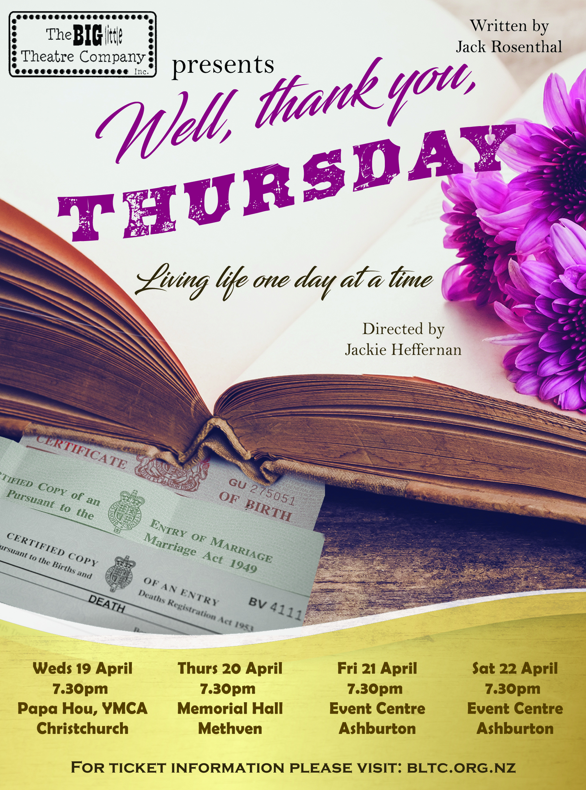

Well, Thank you, Thursday

Big Little Theatre Company presents the tragi-comedy Well, Thank You, Thursday, adapted for the stage for the very first time. Boldly presented on a traverse stage, the play explores a day in the life of a number of disparate lives. The stories of the richly depicted characters ultimately come together at the local registry office, an office which anchors key moments in our lives: birth, marriage, death.
Tickets will be available here soon:
Wed Apr 19, 7:30pm: Papa Hou, YMCA, Christchurch
Thurs Apr 20, 7:30pm: Memorial Hall, Methven
Fri Apr 21, 7:30pm: Ashburton Trust Event Centre
Sat Apr 22, 7:30pm: Ashburton Trust Event Centre